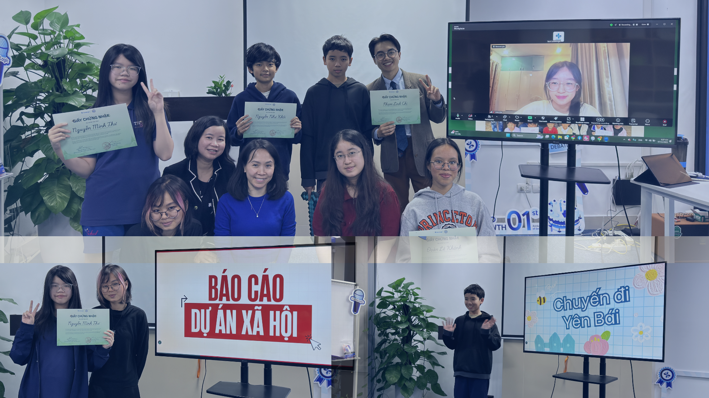
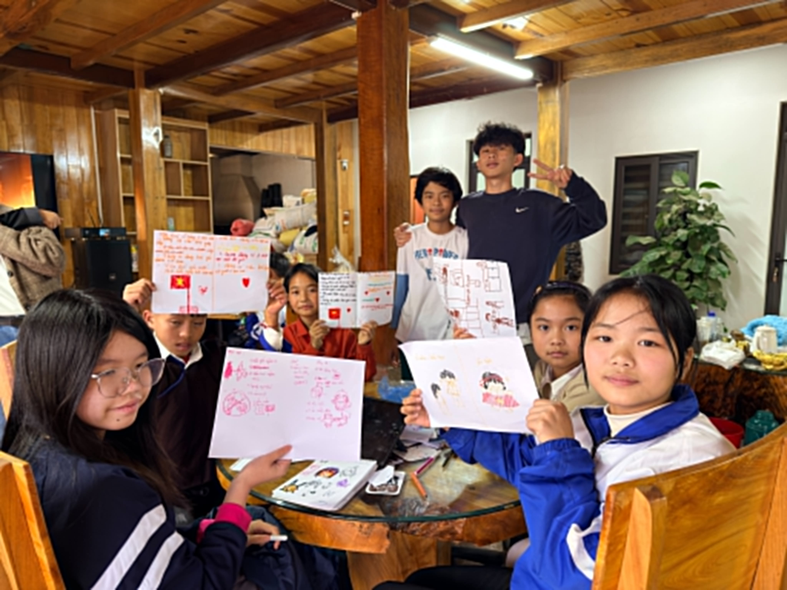

Viết ra để hiểu mình hơn.
Sau khi được lắng nghe, học sinh bắt đầu có từ vựng để gọi tên điều mình đang trải qua.

Chuyện trò không phải một phần “phụ” sau trải nghiệm. Đây là nơi học sinh học cách gọi tên cảm xúc, đối thoại với áp lực và bước vào khác biệt bằng sự tôn trọng.
Đằng sau thành tích và điểm số thường là mong muốn rất thật của bố mẹ: con được an toàn, tự tin và có tương lai tốt hơn. Nhưng cũng ở đó, áp lực dễ âm thầm lớn lên nếu thiếu một không gian đối thoại đúng cách.
Chuyện trò giúp học sinh và phụ huynh bước ra khỏi cách phản ứng tức thời. Thay vào đó, các em học cách đặt câu hỏi, lắng nghe và hiểu rằng mỗi bên đều đang cố gắng theo cách của mình.
“Tôi chỉ mong con hạnh phúc.”
Mẹ của An, 13 tuổi“Tôi sợ mình chưa làm đủ cho con.”
Bố của Nam, 14 tuổi“Tôi không cần con đứng đầu lớp, tôi cần con hiểu mình.”
Mẹ của Minh, 12 tuổi“Bức tường tâm sự” là một phép thử của sự an toàn: học sinh được chia sẻ điều mình đang giữ lại, và nhận ra rằng rất nhiều cảm xúc không chỉ thuộc về riêng một người.
Con cảm thấy áp lực khi phải luôn giỏi.
Con sợ làm bố mẹ thất vọng. Có lúc con chỉ muốn được là chính mình mà không phải chứng minh gì thêm.
Con không biết mình muốn gì nữa. Nhưng ít nhất ở đây, lần đầu con thấy mình có thể nói thật điều đó.

“Khi học sinh biết cấu trúc suy nghĩ của mình và gọi tên cảm xúc của người đối diện, bất đồng không còn là thứ phải né tránh. Nó trở thành cơ hội để hiểu nhau rõ hơn.”
Ba mảnh ghép dưới đây cho thấy chuyện trò có thể trở thành nền cho phản tư, đồng hành và tự viết câu chuyện của mình như thế nào.

Sau khi được lắng nghe, học sinh bắt đầu có từ vựng để gọi tên điều mình đang trải qua.

Không phải cuộc chuyện trò nào cũng diễn ra ngay trên sân khấu hay trong lớp học.

Khi có người đồng hành đúng cách, học sinh dám nói thật hơn và cũng biết lắng nghe tốt hơn.

Đi tiếp sang chapter cuối để thấy cách trải nghiệm và đối thoại được chuyển thành phản tư cá nhân.